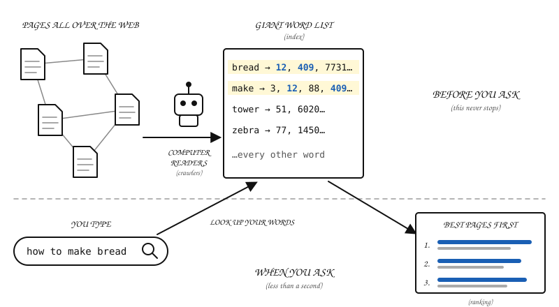

How does Google Search work? (search engines)
You type a few words into a box, and in less than a second you get a list of pages from all over the web. It feels like Google went and looked at the whole web just for you. It didn't. That would take far too long. Almost all of the work happened before you asked.
Google does three big jobs: it reads the web, it builds a giant word list, and it picks which pages to show first.

Computer readers that walk the web (crawling)
Google runs lots of computer programs whose only job is to read web pages, all day and all night. Each reader starts with pages it already knows. It reads a page, writes down every link on it, then follows those links to new pages and does the same thing again.
It's like exploring a giant city by walking through every door you find, and writing down every new door you see along the way. Since pages link to other pages, the readers can find most of the web this way.
Pages change, so the readers keep coming back. A news page that changes every few minutes gets visited often. An old page that never changes gets visited less.
A page's owner can also leave a note at the front door that says "please don't read these rooms." Good readers follow the note. (This note is a file called robots.txt.)
A giant word list (the index)
Reading the web isn't enough. Google can't read billions of pages again every time someone asks a question. So, as the readers go, Google builds a giant list, like the one at the back of a book.
For every word, the list says which pages have that word, and where on the page it shows up. The word "bread" might point to page 12, page 409, page 7,731, and millions more.
When you search for "how to make bread", Google doesn't read any pages. It looks up "make" and "bread" in its list and finds the pages that have both. That's fast, because looking something up in a list is much quicker than reading.
This list is so big that no single computer could hold it. It's cut into pieces and spread across thousands of computers in huge buildings full of computers. (These buildings are called data centers.)
Picking which page goes first (ranking)
For most searches, millions of pages match. But almost nobody looks past the first few, so the order matters most. Google looks at hundreds of signs to decide. Here are some big ones:
- Where your words show up. A page with "bread" in its title is probably more about bread than a page that says "bread" once near the bottom.
- Who points to the page. A link from one page to another is like a vote that says "this is worth reading." A vote from a page that lots of others vote for counts more. This was the big idea Google started with in the late 1990s. (PageRank)
- How new it is. If you search for last night's game, a page from last year won't help.
- How good it is to use. Pages that load fast, work on phones, and are safe get a small push up.
- Where you are. If you search "pizza" in Boston, you want pizza in Boston, not in Rome.
Some results at the very top are paid for. These are ads, and Google marks them "Sponsored."
Understanding what you mean (language understanding)
People don't type perfectly, and they don't always use the same words as the page they want. So before looking anything up, Google tries to work out what you really mean.
It fixes spelling mistakes ("Did you mean...?"). It knows that some words mean the same thing, like "car" and "auto." And it uses computer programs that learned from huge amounts of writing to understand whole questions. If you type "how tall is the big metal tower in paris", it knows you mean the Eiffel Tower, even though you never said its name. (These programs come from machine learning.)
Putting it all together
Before you ask:
- Computer readers walk the web all the time, following links.
- Everything they read goes into the giant word list.
When you ask:
- You type your words, and Google works out what you mean.
- It looks up your words in the list to find pages that match.
- It puts the best pages first and sends you the list.
Steps 1 and 2 never stop. Steps 3 to 5 usually take less than a second.